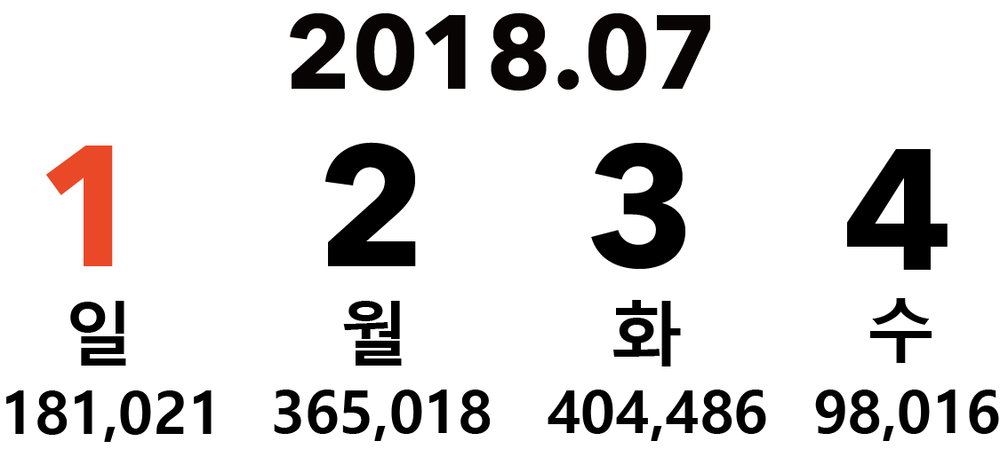
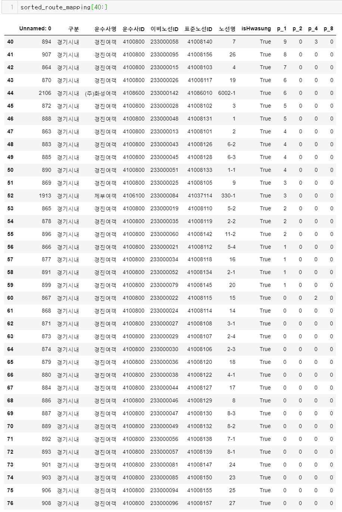
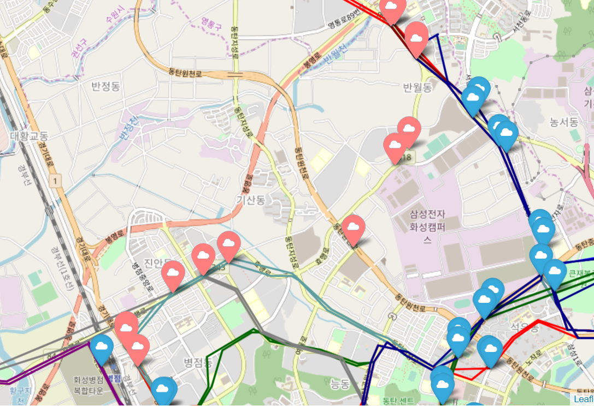
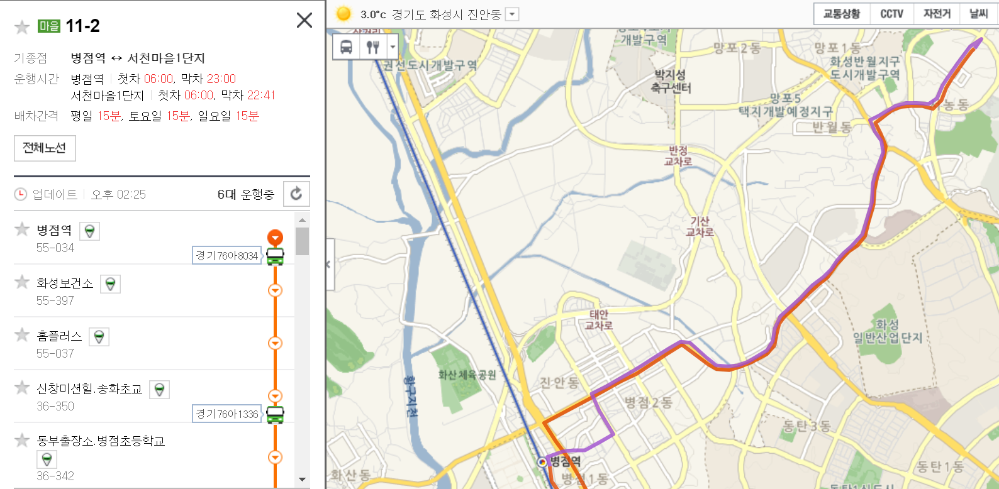

Datasets
주어진 데이터는 아래 9개의 파일로 이루어져 있습니다.
TripChain.csv
'암호화카드번호', '트랜잭션ID', '환승횟수', '교통카드발행사ID', '총이용객수', '사용자구분', '버스노선ID' (1~5) , '승차역ID' (1~5) , '하차역ID' (1~5) , '최초승차역ID', '최종하차역ID' , '총이용금액', '수집건수', '트립체인완료코드'
routestationinfo.csv
routestationmapping.csv
'seq', 'pr_station_id', 'bus_line_no', 'bus_line_no_seq', 'station_nm', 'station_id', 'mobile_no'
moc_link_2018.geojson
'id', 'link_id', 'f_node', 't_node', 'road_use', 'lanes', 'road_rank', 'road_name', 'multi_link', 'connect', 'max_spd', 'rest_veh', 'rest_w', 'rest_h', 'remark', 'user_id', 'workstate', 'dept_code', 'stnl_reg', 'road_type', 'road_no', 'tmpid', 'upload_id', 'sosfnodeid', 'sostnodeid', 'shape_stle', 'geometry'
h_100m_cell_flow.geojson
'그리드id' 'ymd'(날짜), 't00_01'(00-01사이 유동인구), 't01_02', 't02_03', 't03_04', 't04_05', 't05_06', 't06_07', 't07_08', 't08_09', 't09_10', 't10_11', 't11_12', 't12_13', 't13_14', 't14_15', 't15_16', 't16_17', 't17_18', 't18_19', 't19_20', 't20_21', 't21_22', 't22_23', 't23_24', 'emd_cd', 'geometry'(Polygon)
h_100m_cell_pop.geojson
'그리드ID', 'EMD_CD', 'POP_MN' (남자 0세부터 90세까지 10단위), 'POP_WMN' (여자 0세부터 90세까지 10단위), 'geometry'
sk_emd_od.csv
'std_ymd' (기준일자), 'tm_trm' (시간), 'org' (출발 행정동), 'dst' (종료 행정동), 'pop' (인구 이동 수)
tl_scco_emd.geojson
'id' (읍면동의 id), 'emd_cd' (8자리 행정구역 코드), 'emd_eng_nm' (영문이름), 'emd_kor_nm' (한글이름), 'geometry'
stations_table.csv
'표준정류장ID', '시군명', '정류소명', '정류소영문명', '정류소번호', '중앙차로여부', '관할관청', '위치', 'WGS84위도', 'WGS84경도', '모바일정류장ID', '이비카드정류장ID'
Missing Data
미태그 하차 데이터
이용객 데이터에는
태그를 하지 않은 이용객이 포함되어 있습니다.
따라서
환승횟수와 승하차역ID 개수가 맞지 않는 문제가 발생합니다.
따라서 한 사람의
환승경로의 일부만 파악할 수 있었습니다.
환승 1회
환승 4회
환승 5회


Uncollected Data
4일치 데이터
모든 데이터는 2018년 7월 1일부터 4일까지의 정보를 기준으로 합니다.
따라서 주중, 주말 데이터를 따로 분류해서 보기에 너무 적은 데이터이고 (일,월,화,수)
분석의 정확성을 낮추었습니다

적은 이용자 수 ?
화성시내버스를 기준으로 이용객 데이터 중 버스노선ID를 확인한 결과
총 77개의 버스 노선 중
36개 노선의 4일 총 탑승 인원이
10명 이하를 기록했습니다.

그 이유로는
1.
현금 결제에 대한 데이터가 합해지지 않아서
2. 해당 노선들은 하루에
5회 미만 운행 버스이기 때문에
3. 이비카드 '단말기' 데이터가 아니라
이비'카드'의 데이터이기 때문에
로 추측됩니다.
소수의 노선 정보
받은 데이터를 매핑하여 전체 버스 노선을 시각화하고,
주요 정류장에 대한 데이터를 시각화하여 필요해보이는 노선을 만들고자 하였습니다.
하지만 필요하다고 생각된 노선을 지나는 버스가
받은 데이터에는 없지만
현재 화성에서 버스 운영을 하고 있었습니다.
즉, 모든 버스에 대한 데이터가 제공되지 않아 하나씩 관련 노선의 존재 여부를 판단해야했습니다.
 
왼쪽
: 받은 데이터에는
분홍색 마커
로 나타난 정류장을 지나는 노선이
존재하지않음
오른쪽 :
현재 운행중인
11-2번 버스가
비슷하게 지나가는 것을 볼 수 있음
화성시내 버스 기준
화성은 서울 등의
시외로 나가는 버스를 타는 사람이 많습니다.
하지만 데이터를 받은 곳에서 화성시내만을 보기 원하여
시외버스에 대한 정보를 받지 못하여 해당 버스를 탄 이용객의 경우 제외하고 진행했습니다.